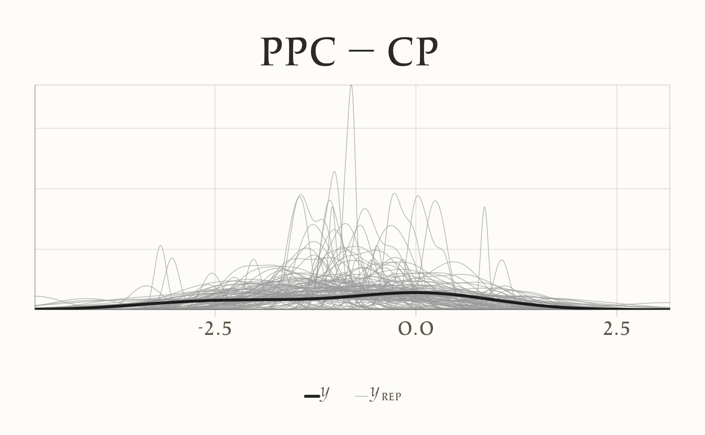
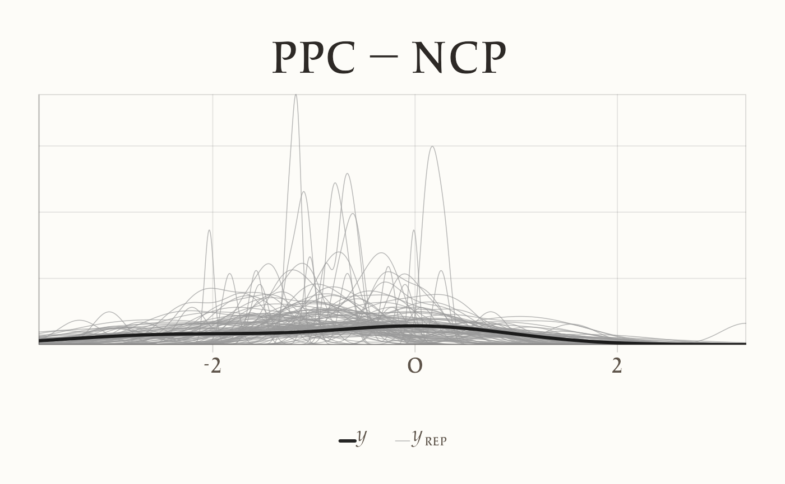

here::here("code", "_common.R") |>
source()
if (!requireNamespace("pacman")) install.packages("pacman")
pacman::p_load(cmdstanr, posterior, bayesplot, ggplot2, dplyr, tibble, forcats)
conflicts_prefer(posterior::ess_bulk)
conflicts_prefer(posterior::ess_tail)23 Parametrizzazioni centered e non-centered
Introduzione
Quando si lavora con modelli gerarchici in Stan, una delle prime scelte riguarda il modo in cui vengono parametrizzate le variabili latenti. Questa decisione, che a prima vista può sembrare di natura puramente tecnica, ha invece conseguenze sostanziali sia sulla stabilità computazionale della stima sia sull’interpretazione dei risultati. In particolare, la distinzione tra parametrizzazione centrata e parametrizzazione non centrata rappresenta un passaggio cruciale per comprendere perché alcuni modelli convergono rapidamente mentre altri incontrano difficoltà anche su dataset apparentemente semplici.
Il cuore della questione risiede nel modo in cui le variabili latenti vengono messe in relazione con i parametri iperpriors. Nella parametrizzazione centrata si assume che le osservazioni dipendano direttamente dalla distribuzione a priori, il che funziona bene quando i dati forniscono informazioni forti e coerenti. Tuttavia, in presenza di dati deboli o altamente variabili, questa scelta può produrre catene MCMC lente e autocorrelate. La parametrizzazione non centrata, al contrario, introduce una trasformazione che disaccoppia i livelli del modello e riduce la dipendenza diretta dai parametri iperpriors. Questa semplice modifica può rendere l’inferenza molto più efficiente, specialmente nei contesti in cui le informazioni empiriche non sono sufficienti a “guidare” l’algoritmo verso una stima stabile.
Per comprendere appieno la differenza tra queste due strategie, è utile partire da un esempio elementare, quello di una singola media normale con varianza nota. Questo caso, apparentemente banale, permette di isolare i meccanismi in gioco e di mostrare come la scelta della parametrizzazione influenzi direttamente il comportamento del campionatore. Nei paragrafi che seguono analizzeremo dunque questo scenario, prima dal punto di vista teorico e poi con esempi numerici e implementazioni concrete in Stan.
23.1 Il caso di una media normale
Immaginiamo di voler stimare la media di una distribuzione normale. Supponiamo che i dati \(y_1, y_2, \ldots, y_n\) provengano da una distribuzione normale con varianza nota \(\sigma^2\) e media incognita \(\mu\). Questo è uno dei problemi più elementari dell’inferenza statistica, ma ci permette di illustrare con chiarezza la differenza tra parametrizzazione centrata e non centrata.
In un’impostazione bayesiana assegniamo a \(\mu\) una distribuzione a priori, ad esempio una normale con media \(\mu_0\) e deviazione standard \(\tau\). La struttura gerarchica del modello è dunque molto semplice: a un primo livello si collocano i dati osservati, distribuiti come \(\mathcal{N}(\mu, \sigma^2)\); a un secondo livello, la media \(\mu\) è a sua volta distribuita come \(\mathcal{N}(\mu_0, \tau^2)\).
Nella parametrizzazione centrata, \(\mu\) viene campionato direttamente da questa distribuzione a priori. La relazione tra iperparametri e parametri è quindi immediata: si parte da \(\mu_0\) e si aggiunge rumore gaussiano con deviazione standard \(\tau\). Questa scelta appare naturale ed è perfettamente adeguata quando i dati sono molto informativi, cioè quando la varianza campionaria è piccola e il numero di osservazioni è grande. In tali condizioni, la distribuzione a posteriori di \(\mu\) è ben identificata e il campionatore esplora rapidamente lo spazio dei parametri.
Le difficoltà emergono quando i dati forniscono informazioni scarse o contraddittorie. In questi casi, la catena MCMC può soffrire di forti autocorrelazioni: il campionatore si muove lentamente, resta intrappolato in alcune regioni dello spazio dei parametri e richiede un numero molto elevato di iterazioni per ottenere stime affidabili.
La parametrizzazione non centrata affronta questo problema con un piccolo ma decisivo cambiamento. Invece di campionare \(\mu\) direttamente, si introduce una variabile ausiliaria \(z \sim \mathcal{N}(0,1)\) e si definisce \(\mu = \mu_0 + \tau z\). In questo modo, \(\mu\) è ancora distribuita secondo \(\mathcal{N}(\mu_0, \tau^2)\), ma la relazione con gli iperparametri è mediata dalla variabile standardizzata \(z\). Questa trasformazione spezza la dipendenza diretta tra i livelli del modello e consente al campionatore di esplorare lo spazio parametrico in maniera più efficiente, specialmente quando i dati sono poco informativi.
Il caso della media normale rappresenta dunque un laboratorio ideale per osservare le implicazioni delle due strategie. Nelle sezioni successive mostreremo, attraverso esempi numerici e codici Stan, come queste differenze teoriche si traducano in prestazioni computazionali e qualità dell’inferenza.
23.2 Esempi numerici
Per rendere più concreta la distinzione tra parametrizzazione centrata e non centrata, consideriamo un semplice set di dati simulati. Supponiamo di avere cinque osservazioni generate da una distribuzione normale con media sconosciuta \(\mu\) e varianza fissata a \(\sigma^2 = 1\). Assegniamo a \(\mu\) un prior gaussiano con media zero e deviazione standard pari a dieci. Questo scenario, volutamente essenziale, ci permette di osservare senza distrazioni gli effetti della scelta di parametrizzazione.
Nel caso centrato, il modello in Stan assume la forma più diretta: si dichiara il parametro \(\mu\), lo si vincola a una distribuzione a priori \(\mathcal{N}(0, 10^2)\) e si specifica la distribuzione dei dati come \(\mathcal{N}(\mu, 1)\). In altre parole, il campionatore deve muoversi nello spazio dei parametri partendo da un collegamento immediato tra la media a priori e le osservazioni.
Il modello non centrato introduce invece una variabile ausiliaria \(z\), distribuita come \(\mathcal{N}(0,1)\). La media diventa \(\mu = 0 + 10z\), e i dati vengono modellati ancora come \(\mathcal{N}(\mu, 1)\). Sebbene i due modelli siano matematicamente equivalenti, dal punto di vista computazionale il secondo spesso si comporta meglio quando i dati non forniscono informazioni sufficienti per “ancorare” \(\mu\).
Per illustrare questa differenza possiamo confrontare i risultati delle due implementazioni. Con dati molto informativi — ad esempio con un numero elevato di osservazioni — i due approcci producono catene MCMC di qualità simile: le stime della media e l’esplorazione dello spazio dei parametri avvengono senza difficoltà. Quando però il numero di osservazioni è ridotto, oppure la varianza è elevata, la parametrizzazione centrata mostra spesso autocorrelazioni marcate e una scarsa efficienza campionaria. La parametrizzazione non centrata, al contrario, mantiene catene più stabili e riduce la necessità di un numero eccessivo di iterazioni.
Questi esempi, seppur elementari, mettono in evidenza un principio generale: la scelta della parametrizzazione non modifica la sostanza del modello, ma può determinare una differenza sostanziale nella sua resa pratica. Nei modelli gerarchici più complessi, la distinzione tra centrato e non centrato diventa cruciale per rendere l’inferenza non solo più efficiente, ma talvolta persino possibile.
23.3 Codice Stan
Nel modello centrato la media \(\mu\) è trattata direttamente come parametro, dotato di una distribuzione a priori normale; i dati sono condizionati su \(\mu\) con varianza nota. Questa scrittura è la più naturale e, quando i dati sono informativi, conduce spesso a catene ben miscelate.
// file: mean_centered.stan
data {
int<lower=1> N; // numero di osservazioni
vector[N] y; // dati osservati
real<lower=0> sigma; // deviazione standard nota del likelihood
real mu0; // media del prior su mu
real<lower=0> tau; // deviazione standard del prior su mu
}
parameters {
real mu; // media incognita (parametrizzazione centrata)
}
model {
mu ~ normal(mu0, tau); // prior centrato
y ~ normal(mu, sigma); // modello di verosimiglianza
}
generated quantities {
vector[N] y_rep; // repliche predittive
vector[N] log_lik; // log-verosimiglianza punto-a-punto
for (n in 1:N) {
y_rep[n] = normal_rng(mu, sigma);
log_lik[n] = normal_lpdf(y[n] | mu, sigma);
}
}La versione non centrata introduce una variabile standardizzata \(z \sim \mathcal{N}(0,1)\) e definisce \(\mu = \mu_0 + \tau z\). La distribuzione implicita di \(\mu\) rimane identica a quella del modello centrato, ma la geometria dello spazio dei parametri cambia in modo decisivo: la dipendenza tra livelli gerarchici si allenta e, in scenari a bassa informatività, il campionatore può muoversi con maggiore efficienza.
// file: mean_noncentered.stan
data {
int<lower=1> N;
vector[N] y;
real<lower=0> sigma;
real mu0;
real<lower=0> tau;
}
parameters {
real z; // variabile standardizzata (non centrata)
}
transformed parameters {
real mu = mu0 + tau * z; // ricostruzione della media sullo scale del prior
}
model {
z ~ normal(0, 1); // prior equivalente su mu, espresso via z
y ~ normal(mu, sigma); // verosimiglianza invariata
}
generated quantities {
vector[N] y_rep;
vector[N] log_lik;
for (n in 1:N) {
y_rep[n] = normal_rng(mu, sigma);
log_lik[n] = normal_lpdf(y[n] | mu, sigma);
}
}
23.4 Esecuzione con cmdstanr e confronto tra centrato e non centrato
Per apprezzare le differenze tra le due parametrizzazioni, conviene fissare uno scenario leggermente “difficile” per il campionatore: pochi dati e un prior deliberatamente ampio sulla media. In questo modo la geometria della posterior risulta poco concentrata e gli effetti della scelta di parametrizzazione emergono con maggiore nettezza.
set.seed(1234)
# Dati simulati: pochi punti e varianza del likelihood modesta
N <- 5
sigma <- 1.0
mu_true <- -0.5
y <- rnorm(N, mean = mu_true, sd = sigma)
# Prior ampio sulla media
mu0 <- 0
tau <- 20
stan_centered <- '
data {
int<lower=1> N;
vector[N] y;
real<lower=0> sigma;
real mu0;
real<lower=0> tau;
}
parameters {
real mu;
}
model {
mu ~ normal(mu0, tau);
y ~ normal(mu, sigma);
}
generated quantities {
vector[N] y_rep;
vector[N] log_lik;
for (n in 1:N) {
y_rep[n] = normal_rng(mu, sigma);
log_lik[n] = normal_lpdf(y[n] | mu, sigma);
}
}
'
stan_noncentered <- '
data {
int<lower=1> N;
vector[N] y;
real<lower=0> sigma;
real mu0;
real<lower=0> tau;
}
parameters {
real z;
}
transformed parameters {
real mu = mu0 + tau * z;
}
model {
z ~ normal(0, 1);
y ~ normal(mu, sigma);
}
generated quantities {
vector[N] y_rep;
vector[N] log_lik;
for (n in 1:N) {
y_rep[n] = normal_rng(mu, sigma);
log_lik[n] = normal_lpdf(y[n] | mu, sigma);
}
}
'
writeLines(stan_centered, here("stan"," mean_centered.stan"))
writeLines(stan_noncentered, here("stan", "mean_noncentered.stan"))
# Compilazione
mod_c <- cmdstan_model(here("stan"," mean_centered.stan"))
mod_nc <- cmdstan_model(here("stan", "mean_noncentered.stan"))
# Dati per Stan
dat <- list(
N = N,
y = as.numeric(y),
sigma = sigma,
mu0 = mu0,
tau = tau
)
# Scelte HMC caute, per evitare divergenze in scenari più spigolosi
hmc_args <- list(adapt_delta = 0.95, max_treedepth = 12)
fit_c <- mod_c$sample(
data = dat, seed = 6543, chains = 4, parallel_chains = 4,
iter_warmup = 1000, iter_sampling = 1000,
refresh = 0,
adapt_delta = hmc_args$adapt_delta, max_treedepth = hmc_args$max_treedepth
)
fit_nc <- mod_nc$sample(
data = dat, seed = 7654, chains = 4, parallel_chains = 4,
iter_warmup = 1000, iter_sampling = 1000,
refresh = 0,
adapt_delta = hmc_args$adapt_delta, max_treedepth = hmc_args$max_treedepth
)
# Estratti posteriori in formato draws
draws_c <- fit_c$draws()
draws_nc <- fit_nc$draws()
# Riassunti diagnostici essenziali
# Centered: esiste mu ma NON esiste z
sum_c <- posterior::summarise_draws(fit_c$draws(variables = "mu"))
# Non-centered: esiste z; mu esiste se lo hai definito nei transformed parameters
# (nel nostro codice sì: `real mu = mu0 + tau * z;`)
sum_nc <- posterior::summarise_draws(fit_nc$draws(variables = c("mu", "z")))L’output di summarise_draws fornisce, oltre alle stime a posteriori, lo \(\widehat{R}\) e due misure di dimensione campionaria effettiva: ESS bulk ed ESS tail. La prima descrive la qualità della miscela nelle regioni centrali della distribuzione a posteriori; quando il campionatore esplora con facilità il cuore della distribuzione, l’ESS bulk tende a valori elevati. La seconda, l’ESS tail, quantifica la qualità della miscela nelle code; è sensibile a esplorazioni lente o a salti rari verso le regioni estreme, fenomeni che spesso accompagnano geometrie mal condizionate o curvature accentuate. Nella pratica interpretativa, si guarda a entrambe: una buona miscela nel bulk senza un’adeguata esplorazione delle code può indurre a sottostimare l’incertezza, mentre una buona copertura delle code con un bulk carente suggerisce lentezze diffuse e stime instabili anche in prossimità dei valori più plausibili. In condizioni regolari, ci si attende \(\widehat{R}\) prossimo a 1 per tutti i parametri, ESS bulk e ESS tail di ordine almeno qualche centinaio con 4000 draw totali, e l’assenza di divergenze nelle diagnostiche di cmdstanr.
sum_c
#> # A tibble: 1 × 10
#> variable mean median sd mad q5 q95 rhat ess_bulk ess_tail
#> <chr> <dbl> <dbl> <dbl> <dbl> <dbl> <dbl> <dbl> <dbl> <dbl>
#> 1 mu -0.858 -0.858 0.445 0.439 -1.587 -0.148 1.002 1222.890 1215.074sum_nc
#> # A tibble: 2 × 10
#> variable mean median sd mad q5 q95 rhat ess_bulk ess_tail
#> <chr> <dbl> <dbl> <dbl> <dbl> <dbl> <dbl> <dbl> <dbl> <dbl>
#> 1 mu -0.864 -0.868 0.439 0.442 -1.569 -0.135 1.005 1341.017 1224.185
#> 2 z -0.043 -0.043 0.022 0.022 -0.078 -0.007 1.005 1341.018 1224.185Un altro punto di osservazione utile riguarda la predizione. Le repliche posteriori, pur generate dalla stessa struttura del likelihood, possono risentire indirettamente dell’efficienza campionaria: quando la catena si muove con difficoltà, la variabilità predittiva ricostruita dai campioni è più rumorosa e meno stabile da una replica all’altra; quando invece la miscela è buona, gli stessi indici predittivi tendono a stabilizzarsi più rapidamente.
# Estrazione delle repliche predittive
yrep_c <- fit_c$draws("y_rep", format = "matrix")
yrep_nc <- fit_nc$draws("y_rep", format = "matrix")
# Un rapido overlay delle densità
p1 <- bayesplot::ppc_dens_overlay(y, yrep_c[1:100, , drop = FALSE]) +
ggplot2::labs(title = "PPC — CP")
p2 <- bayesplot::ppc_dens_overlay(y, yrep_nc[1:100, , drop = FALSE]) +
ggplot2::labs(title = "PPC — NCP")
p1
p2
In sintesi, a parità di specifica modellistica, la differenza che interessa è esclusivamente computazionale. Con pochi dati e prior larghi, la formulazione non centrata tende ad aumentare l’ESS, a ridurre l’autocorrelazione e a produrre catene più regolari. Se aumentiamo l’informatività dei dati, ampliando la numerosità campionaria o riducendo la varianza del likelihood, la situazione si riequilibra e la parametrizzazione centrata risulta spesso del tutto adeguata, talvolta persino leggermente più rapida da campionare per via della sua immediatezza geometrica.
Nel caso presente, di un modello estremamente semplice, i due approcci producono gli stessi risultati, anche con un campione estremamente ridotto. Nel caso di modelli più complessi, invece, la parametrizzazione non centrata può essere utile.
23.5 Riflessoni conclusive
La distinzione tra parametrizzazione centrata e non centrata non riguarda soltanto un dettaglio tecnico del codice Stan, ma tocca un aspetto fondamentale della modellazione gerarchica: il modo in cui rappresentiamo la relazione tra parametri a livello superiore e variabili latenti a livello inferiore. I due approcci sono matematicamente equivalenti, ma generano geometrie molto diverse nello spazio dei parametri, con conseguenze pratiche notevoli per l’efficienza del campionamento.
La parametrizzazione centrata è la più intuitiva. Essa esprime i parametri latenti come realizzazioni dirette della distribuzione a priori e funziona particolarmente bene quando i dati sono molto informativi. In questi casi la posterior è ben concentrata, il campionatore si muove agevolmente nello spazio parametrico e la semplicità della formulazione costituisce un vantaggio. Tuttavia, quando i dati sono scarsi o rumorosi, la dipendenza stretta tra i livelli gerarchici può rendere l’inferenza difficile: le catene diventano lente, autocorrelate e richiedono molte iterazioni per produrre stime affidabili.
La parametrizzazione non centrata affronta proprio questo problema. Introdurre una variabile standardizzata e ricostruire i parametri a partire da essa riduce la correlazione tra livelli, semplificando la geometria che il campionatore deve esplorare. In contesti a bassa informatività, ciò si traduce in un guadagno sostanziale di efficienza, con catene più stabili e un numero effettivo di campioni più elevato. È per questo motivo che, nella pratica quotidiana, i modelli non centrati sono spesso la scelta più sicura, soprattutto quando si lavora con strutture complesse o con dati limitati.
È importante sottolineare che non esiste una regola assoluta: in scenari molto informativi, la parametrizzazione centrata può risultare persino più rapida, proprio grazie alla sua immediatezza. Per questo motivo, nelle applicazioni reali conviene spesso provare entrambe le formulazioni o ricorrere a strategie miste, note come “parametrizzazioni parzialmente centrate”, che combinano i vantaggi dei due approcci adattandosi alle caratteristiche dei dati.
Il caso della media normale con varianza nota ha rappresentato un laboratorio ideale per illustrare i meccanismi di base. Nei capitoli successivi, la stessa logica tornerà in modelli più articolati — ad esempio nella regressione gerarchica e nei modelli a effetti misti — dove la scelta della parametrizzazione diventa ancora più cruciale. Ciò che qui abbiamo osservato in forma elementare si generalizza infatti a ogni contesto in cui esistono livelli multipli di variabilità e legami gerarchici tra parametri.
In sintesi, la distinzione tra parametrizzazioni centered e non-centered non riguarda la sostanza del modello, ma la sua implementazione computazionale. Comprendere questa differenza è cruciale per usare Stan in modo efficace, soprattutto nei modelli gerarchici psicologici, dove i dati individuali sono spesso scarsi e i prior giocano un ruolo importante.
Bibliografia
McElreath, R. (2020). Statistical rethinking: A Bayesian course with examples in R and Stan (2nd Edition). CRC Press.